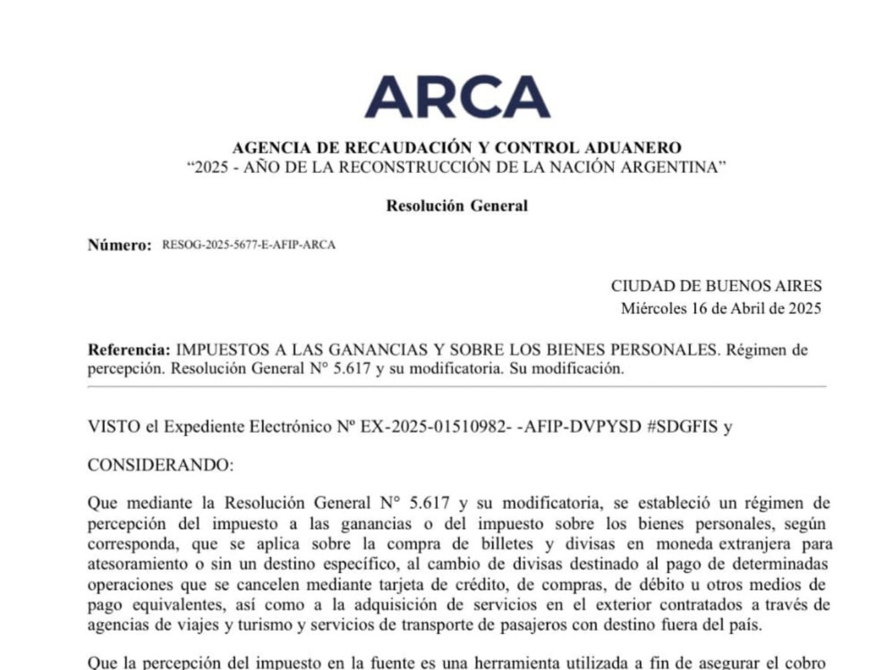

El Gobierno elimina el 30% de recargo en compras de videojuegos en plataformas digitales
Finanzas | 17 de abril de 2025 — El Gobierno elimina el 30% de recargo en compras de videojuegos en plataformas digitales
Hasta ahora, los consumidores argentinos debían pagar un recargo del 30% en concepto de percepción a cuenta de los impuestos a las Ganancias y a los Bienes Personales, además del 21% correspondiente al IVA. Con la nueva disposición, las transacciones digitales para adquirir juegos o realizar compras dentro de ellos sólo estarán alcanzadas por el IVA, lo que reduce significativamente el costo final.
“Esta decisión busca aliviar la carga tributaria sobre los consumidores y fomentar el acceso a productos digitales”, expresó Adorni durante una conferencia de prensa en Casa Rosada.
La eliminación del recargo impactará positivamente en una amplia variedad de plataformas y servicios de videojuegos, entre ellas Steam, PlayStation Network, Xbox, Epic Games, EA Play, Battle.net, Nintendo, Riot Games, Ubisoft, Rockstar Games, y muchas más.
üö® OFICIAL üö®
— Noticias PlayStation (@NotiPlay_) April 17, 2025
Si vives en Argentina, a partir de esta noche ya no se aplicarán impuestos a las compras realizadas en la PlayStation Store üî•üî•üî•üî• pic.twitter.com/M8rvmUvscn
La resolución entra en vigencia desde su publicación en el Boletín Oficial, es decir, a partir del 17 de abril. En caso de que las entidades financieras no hayan actualizado sus sistemas a tiempo, cualquier percepción aplicada indebidamente deberá ser devuelta en el próximo resumen de cuenta.
La medida fue celebrada por la comunidad gamer y representa un nuevo paso dentro de la política del Ejecutivo de reducir la presión impositiva en el consumo digital.